Benchmark
pág. 20Menu de referência do restaurante, usado pelo sistema para checar a paridade de preço entre a 99Food e outros canais de venda (balcão, outras plataformas).
Conceitos, regras de RTBO, planilha, mensagens, ofertas e entregas em um único guia pesquisável.
Conceitos e siglas em primeiro lugar. Pesquise ou filtre por letra.
Menu de referência do restaurante, usado pelo sistema para checar a paridade de preço entre a 99Food e outros canais de venda (balcão, outras plataformas).
City Key Account: marcas regionais ou restaurantes estratégicos (amados).
Lead frio: ainda não demonstrou interesse, nunca esteve cadastrado no site e tem o cadastro conduzido pelo agente.
Restaurante que trabalha somente com delivery e opera com menu digital, sem necessidade de cardápio físico.
Restaurante que recebe pedidos presencialmente; precisa apresentar um menu físico (cardápio de balcão).
Lead quente que já iniciou o cadastro no site, mas não prosseguiu com a assinatura do T&C.
Etapa em que o restaurante baixa o Gestor de Pedidos e fica online pela primeira vez para receber pedidos.
A arte do glossário na pág. 15 descreve entregas feitas pelos restaurantes. Já os quadros comerciais das págs. 13–14 associam entrega feita pela 99 a Full Service. Há divergência entre as peças do arquivo; confirme a nomenclatura com a operação.
Segmento de supermercados, mercearias, lojas de conveniência, adegas e pet shops.
Contato receptivo: o cliente procura a empresa por iniciativa própria.
Key Account: marcas nacionais e internacionais.
Cadastro ou oportunidade de um estabelecimento em alguma etapa da jornada comercial.
A arte do glossário na pág. 15 cita os parceiros de entrega. Já os quadros comerciais das págs. 13–14 atribuem a entrega própria ao restaurante no modelo Marketplace. Há divergência entre as peças do arquivo; confirme a nomenclatura com a operação.
Etapa de inclusão das informações necessárias para o funcionamento do restaurante após a assinatura dos termos.
Contato ativo: a empresa procura clientes de forma proativa.
Conjunto de etapas obrigatórias de onboarding que o restaurante conclui após assinar o contrato e antes de ficar online.
Lead que concluiu a assinatura do T&C, mas ainda precisa realizar as configurações para ficar RTBO.
Classificações indicadas no material para restaurantes com boas performances.
Classificações indicadas no material para restaurante long tail.
Termos e condições assinados pelo restaurante durante o cadastro.
Cada CNPJ pode manter somente uma conta bancária vinculada por vez. A conta precisa pertencer ao mesmo titular do CNPJ; contas de CPF ou de terceiros não são aceitas.
Pequenos e médios estabelecimentos independentes.
Tempo de resposta do time.
Nenhum termo encontrado. Ajuste a busca ou escolha outra letra.
Comece pelas definições do negócio e pela jornada de cadastro.
Regras de negócio da 99Food: o que pode ou não pode ser feito antes de chegar ao parceiro. Muitas recusas de tarefas decorrem de regras de negócio ou de limitações do sistema.
Restaurantes que recebem pedidos presencialmente e precisam de menu físico (cardápio de balcão).
Ao responder “Sim” à pergunta “Seu restaurante possui cardápio para consumo no local?”, deve enviar foto do menu físico no RTBO.
Restaurantes que operam somente com delivery e utilizam menu digital.
Ao responder “Não”, o cardápio de balcão não é obrigatório no RTBO; o cardápio é digital.
A plataforma conecta o restaurante aos clientes, e o próprio restaurante realiza as entregas.
A plataforma conecta o restaurante aos clientes, e os parceiros de entrega da 99 realizam a entrega.
Fontes de referência, planos e benchmark.
A regra varia conforme o plano do restaurante e a fonte utilizada para criar o menu.
| Fonte / plano | Plano Fixo | Plano Flex |
|---|---|---|
| Dine-In | Igual ao balcão (+5%). | Até +10% acima do balcão. O material orienta divulgar essa margem com cautela e apenas de forma consultiva. |
| iFood | 15% abaixo do iFood. | Igual ao iFood (+0%). |
| Status | Descontinuado. | Plano atual (todos os novos), segundo o documento. |
É o menu de referência usado pelo sistema para comparar preços equivalentes do restaurante com os de outros canais.
O menu de referência é usado para checar a paridade de preço entre canais.
Ele vira a base de comparação; todo item ativo é checado contra o preço equivalente do benchmark.
Se a referência for atualizada, o sistema pode acusar divergências mesmo que os preços próprios da loja não tenham sido alterados.
O material mostra um aviso vermelho quando o preço de um item fica mais alto que o produto de referência (benchmark). O aviso, por si só, não impede que o produto seja vendido, mas a divergência precisa ser resolvida.
Tudo o que o restaurante precisa concluir antes de ficar online.
RTBO = Ready To Be Online. São as etapas obrigatórias de onboarding entre a assinatura do contrato e o restaurante ficar online. O material informa que há de 5 a 7 tarefas por loja, conforme entrega e contrato; parte é preenchida pelo sistema e parte é manual.
Marque os itens somente após conferir o cadastro da loja. As marcações não alteram dados nos sistemas.
| Etapa | Para que serve | Como é preenchida | Exigência | Validação / prazo |
|---|---|---|---|---|
| 1. Número de contato | Telefone da loja para comunicações internas; não aparece para clientes/entregadores. | Automático, vindo do contrato assinado. | Todos | Durante a assinatura do contrato. |
| 2. Categoria principal | Categoria culinária principal; influencia a apresentação da loja no app. | Automático para lojas vindas do iFood; demais casos, preenchimento manual. | Todos | Não informado. |
| 3. Horário de funcionamento | Dias e horários em que a loja recebe pedidos. | Automático para lojas vindas do iFood; demais casos, manual. | Todos | Não informado. |
| 4. Tempo de preparo | Tempo médio para preparar o pedido, que afeta o prazo exibido ao cliente. | Automático conforme a categoria, alterável se necessário. | Todos | Não informado. |
| 5. Informações de entrega | Modelo, área e cobertura da entrega da loja. | Tipo de entrega automático conforme o contrato; área pode ser editada. | Somente entrega própria | Não informado. |
| 6. Formas de pagamento na entrega | Meios de pagamento aceitos em pedidos entregues pelos próprios entregadores. | Manual, pelo restaurante ou BD/SIS. | Somente entrega própria | Não informado. |
| 7. Conta bancária | Dados para receber os repasses da 99Food; vinculados ao mesmo CNPJ da loja. | Manual, pelo restaurante ou BD/SIS. | Todas as lojas | Automática: microdepósito, até 2 dias úteis. |
| 8. Foto de capa | Imagem principal da loja no app e primeira coisa que o cliente vê. | Manual, pelo restaurante ou BD/SIS. | Todos | Auditoria B-Ops (SLA: 24 h). |
| 9. Foto de fachada | Foto da frente da loja para ajudar entregador a localizar o endereço de retirada. | Manual, pelo restaurante ou BD/SIS. | Todos | Auditoria B-Ops (SLA: 24 h). |
| 10. Criação do menu | Cardápio publicado que o cliente vê e usa para pedir; criado pelo time a partir da fonte enviada. | Manual, solicitado pelo restaurante ou BD/SIS. | Todas as lojas | Execução B-Ops (SLA: 48 h). |
| 11. Cardápio de balcão (Dine-In) | Foto do cardápio de consumo local para validar a paridade de preços. | Manual, pelo restaurante ou BD/SIS. | Atendimento presencial | Auditoria B-Ops (SLA: 24 h). |
O documento define como grocery o estabelecimento que comercializa comida embalada, bebidas e itens do dia a dia em vez de comida preparada. Exemplos: mercado, adega, loja de conveniência, farmácia, pet shop e açougue.
A foto deve representar de forma real e clara o ponto físico do estabelecimento e permitir a identificação pelo entregador. O material informa SLA de resposta do time de 24 horas.
A imagem de capa é a principal foto exibida no aplicativo para identificação do restaurante. O material informa SLA de resposta do time de 24 horas.
O material apresenta como exemplo aprovado uma foto nítida de alimento, com o prato em foco, sem elementos proibidos.
A conta cadastrada é utilizada para o restaurante receber os repasses da 99Food e faz parte do RTBO obrigatório para todas as lojas.
O quadro de etapas de RTBO informa validação automática por microdepósito, em até 2 dias úteis.
| Taxa / regra | Entrega feita pela 99 | Entrega própria | Fixo (inativo) |
|---|---|---|---|
| Comissão | 8,9% | 10,9% | 0 |
| Fee mensal | 0 | 0 | 0 |
| POL (pagamento online) | 3,2% | 3,2% | 3,2% |
| Custos logísticos | Full Service | — | — |
| Frete para novos clientes | Dois primeiros pedidos de cada novo cliente | Dois primeiros pedidos de cada novo cliente | Dois primeiros pedidos de cada novo cliente |
| Preços na plataforma | Mesmo preço do iFood. Dine-In pode aplicar margem de até 10% (markup). | Mesmo preço do iFood. Dine-In pode aplicar margem de até 10% (markup). | Tem que cobrar 15% a menos que o iFood. |
Pagamento semanal às quartas-feiras, na conta bancária cadastrada, para o ciclo de segunda a domingo.
Pagamento pela Conta 99 Pay, de acordo com o arquivo.
Macapá · Poços de Caldas · Botucatu · Campinas · Belo Horizonte · Salvador · Recife · Curitiba · São Paulo · Rio de Janeiro · Goiânia · São José dos Campos · Brasília · Maceió · Sorocaba · Porto Alegre · Manaus · Fortaleza.
Do painel de indicadores à auditoria: instruções de consulta e filtros convertidas em texto.
A planilha principal organiza os indicadores, os leads, as prioridades e o acompanhamento da produção do time.
Esses códigos são usados na planilha operacional para identificar a pendência. A remoção anterior da letra P do glossário foi mantida; os códigos continuam aqui porque fazem parte das instruções de uso da planilha.
Utilize a aba para solicitar leads que não estão em seu nome ou que saíram da sua carteira.
O documento informa a possibilidade de um dia de home office por semana e orienta registrar o dia escolhido na aba específica da planilha.
Consulte as condições vigentes da equipe antes de marcar o dia.
Os marcadores funcionam somente nesta página e não alteram a planilha original.
Modelos CRMSIS e abordagens do documento, separados por RTBO, FO, suporte e assuntos comerciais. Filtre, personalize e copie em poucos cliques.
Orientações para Smart Promo, Entrega Sob Demanda, Retirada na Loja e custo logístico.
No computador, acesse Central de Ofertas e selecione Saiba mais sobre Marketing Inteligente.
Em Editar, marque o aceite do termo e selecione Sair.
Em Participar da campanha, selecione somente as marcas e lojas que devem sair, marque o aceite e confirme Sair na janela seguinte.
A logística da 99Entregas pode atender pedidos feitos fora da 99Food, como vendas por WhatsApp, telefone ou site próprio.
Modalidade para que o cliente retire o pedido no estabelecimento. A liberação depende de elegibilidade e aceite do parceiro.
No Portal de Gestão, acesse Configurações da Loja → Configurações de Entrega → Retirada na Loja e confirme a ativação.
O pedido é identificado pelo selo “Retirada”. Confirme e prepare os itens normalmente.
Em “Confirmar Entrega”, informe os quatro últimos dígitos do celular do cliente. Essa verificação é obrigatória antes de concluir o pedido.
O custo é dinâmico e considera quatro fatores: distância entre restaurante e usuário, tempo estimado de entrega, demanda na região e condições de rota ou clima.
A oferta Entrega Grátis para Novo Cliente concede entrega grátis nos dois primeiros pedidos de cada novo cliente. O valor mínimo varia por região; consulte os detalhes em Configurações de Entrega antes de comunicar a condição.
As imagens preservam as capturas do material complementar. Menu e leads aparecem somente como referência visual; os procedimentos textuais correspondentes continuam removidos do playbook.
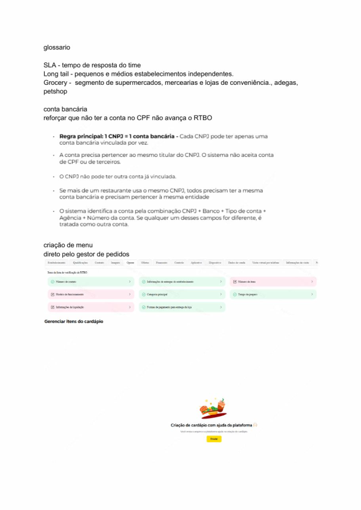
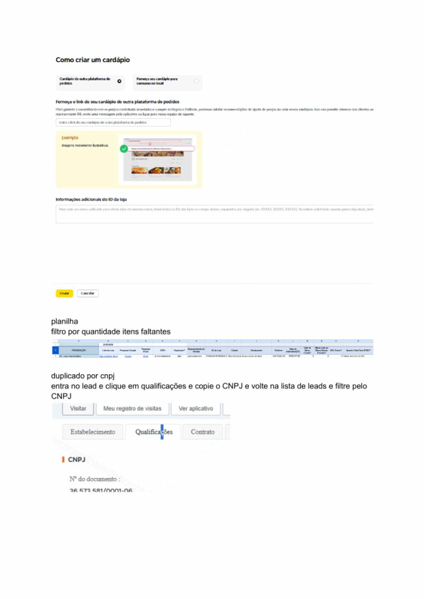
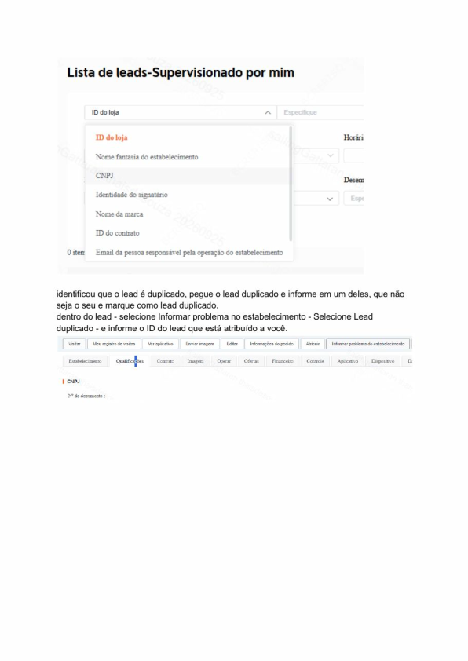
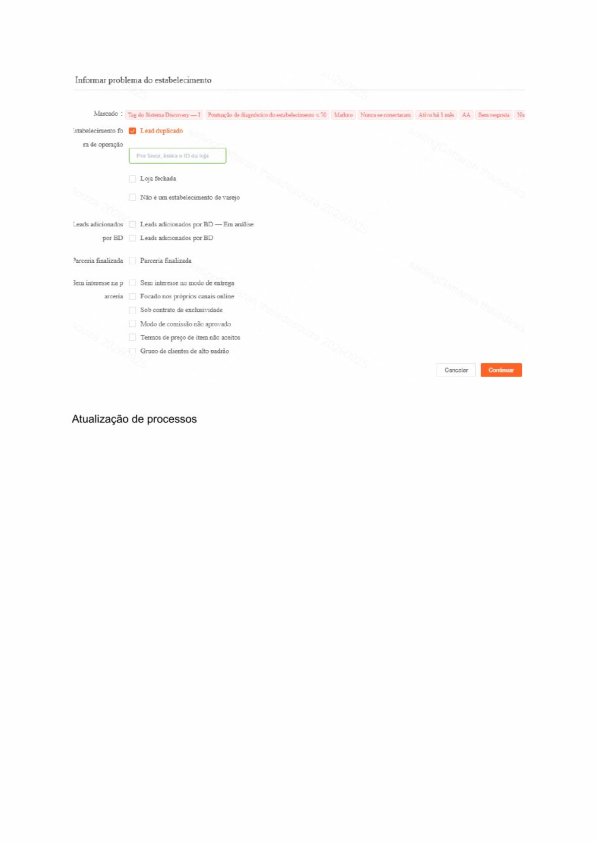
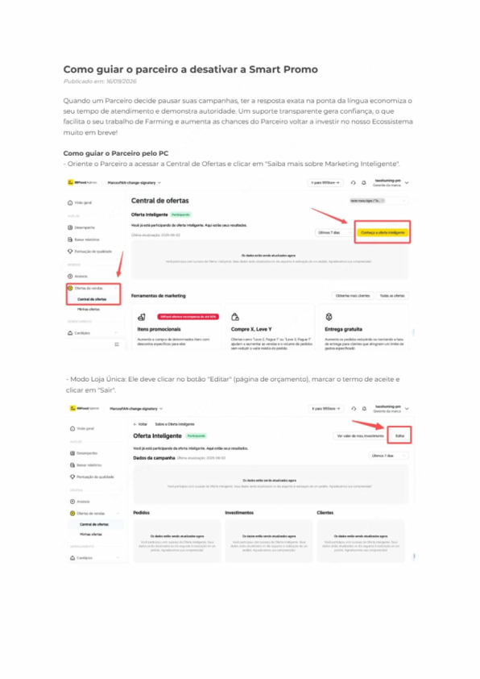
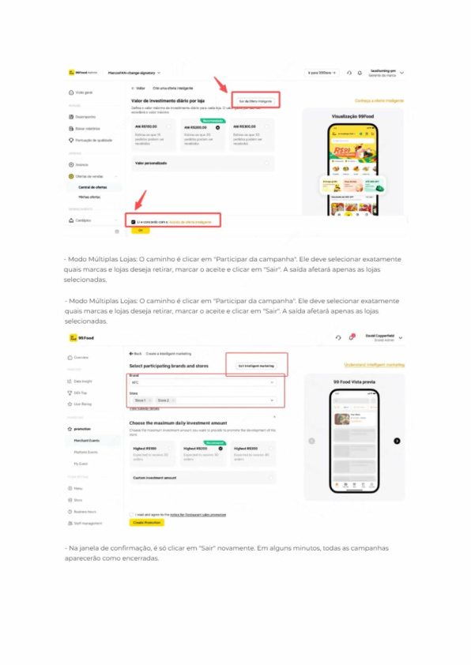
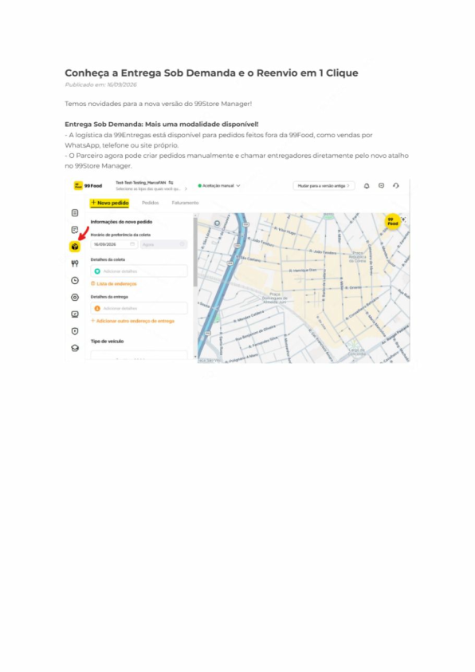
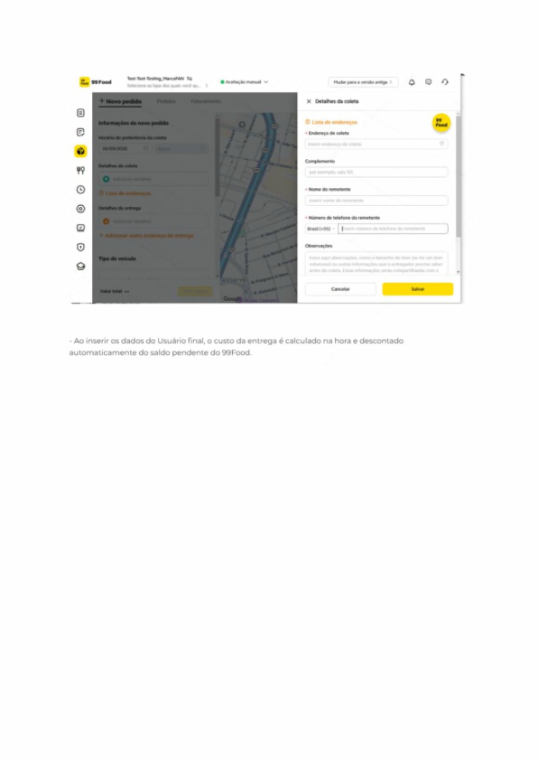
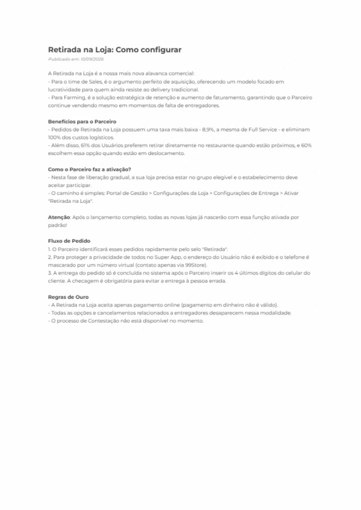
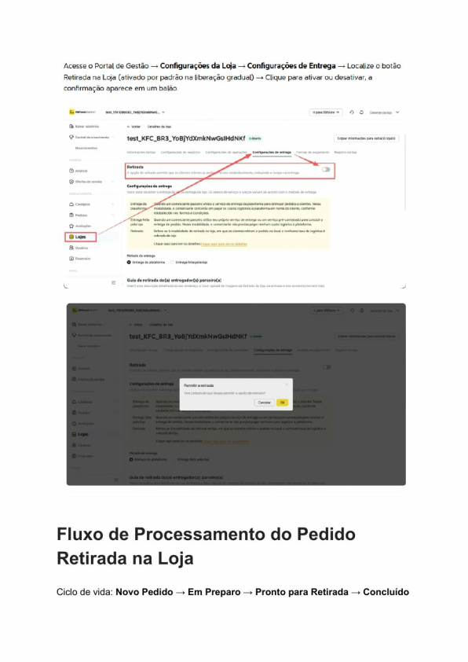
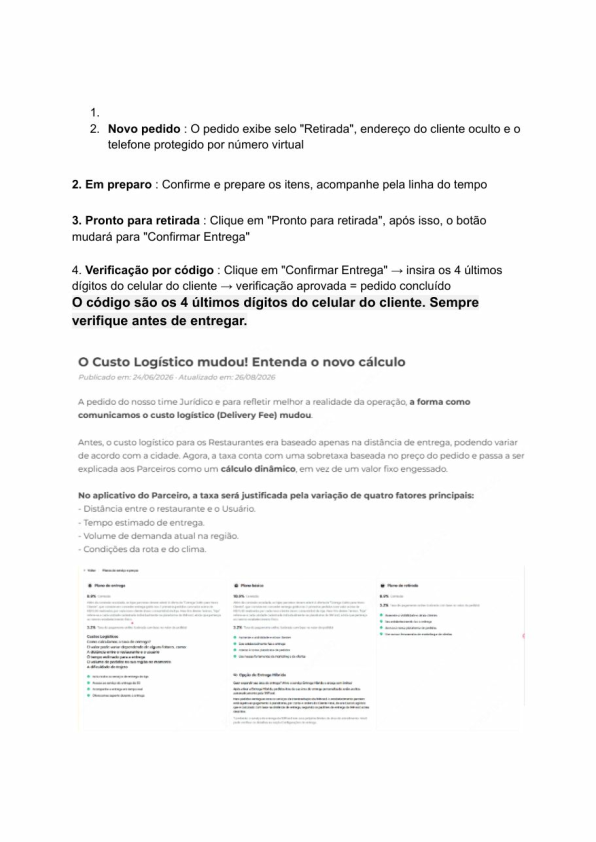
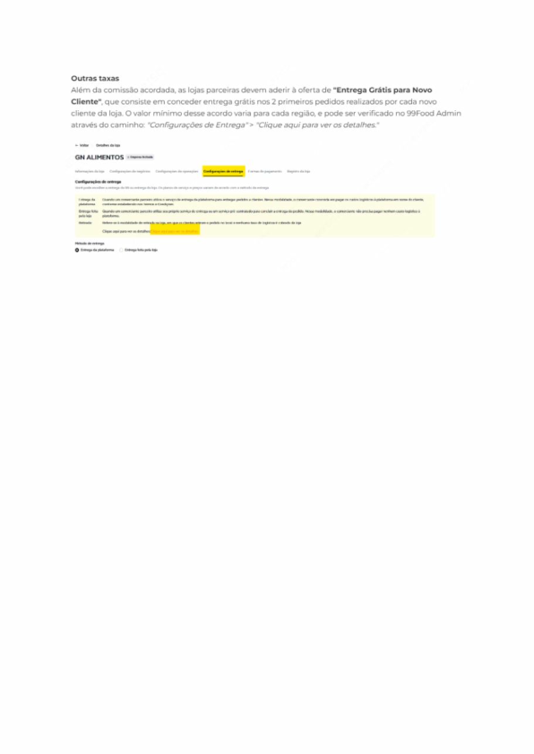